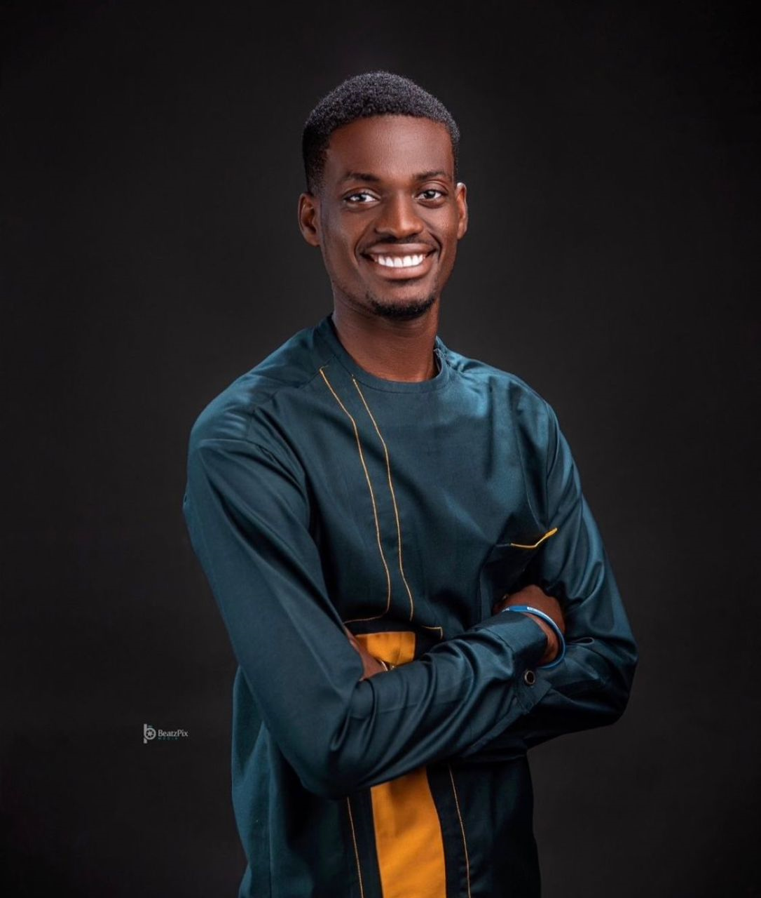

Amaefula Felix

SUMMARY
To work in a challenging environment and be the best at what I do, developing myself in service and understanding to people.
To skillfully and expertly manage and execute the affair of the organization in the most effective manner, towards the achievement of the organization’s goal.
EDUCATION
- Bola Ige Millennium Senior Secondary School (2014-2017)
(Senior Secondary School Certificate)
- The Sams Montessorri School (2011-2014)
(Junior Secondary School Certificate)
- Givic Nursery and Primary School (2003-2011)
(First School Leaving Certificate)
WORK EXPERIENCE
- LOTS Charity Foundation
Volunteer (2017 - 2019)
- Learn the concept of Volunteering.
- Learned the skills and attributes of a leader.
- Learned the importance of Team Building and Team WOrk.
- Managed the Administrative duties of the Organization.
- Assisted in the Academic duties of the organization.
- Assisted in Volunteering for Outreach and Charity Programmes.
- Maxliner Communications
Computer Operator (February 2019 - August 2019)
- Assisted with typing and printing of documents.
- Managed user interactions and communications in the Cafe.
- Assisted in the production of ID Cards, passport photograph, CV etc.
- Assisted in research and information finding for assignments and project work.
- MercySeat Maritime Intermediaries Limited
Secretary (May 2022 - August 2022)
- Attend to vistors and guests who visit the Office.
- Take record of all dcuments in the Office.
- Manage incoming and outgoing mail and correspondence.
- Managed meetings, appointments and office work.
- Customer Experience Support - Treekle Inc.
Treekle Remote Internship (August 2023 Till Date)
- Learned the concept of Customer Experience Support.
- Answered customer questions.
- Resolved customer complaints, worries and issues.
- Learned the importance of Team Building and Team WOrk.
SKILLS
- Organizational Skills.
- Microsoft Office.
- Secretarial Skills.
- Customer Service.
OTHER